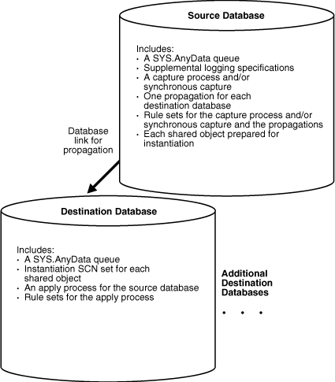
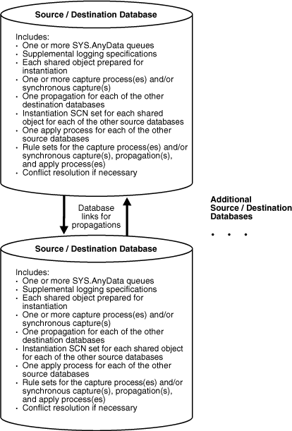

3 Flexible Oracle Streams Replication Configuration
This chapter describes flexible methods for configuring Oracle Streams replication between two or more databases. This chapter includes step-by-step instructions for configuring each Oracle Streams component to build a single-source or multiple-source replication environment.
One common type of single-source replication environment is a hub-and-spoke replication environment that does not allow changes to the replicated database objects in the spoke databases. The following are common types of multiple-source replication environments:
-
A hub-and-spoke replication environment that allows changes to the replicated database objects in the spoke databases
-
An n-way replication environment
"Decide Which Type of Replication Environment to Configure" describes these common types of replication environments in detail.
If possible, consider using a simple method for configuring Oracle Streams replication described in Simple Oracle Streams Replication Configuration. You can either use the Oracle Streams tool in Oracle Enterprise Manager Cloud Control or a single procedure in the DBMS_STREAMS_ADM package configure all of the Oracle Streams components in a replication environment with two databases. Also, you can use a simple method and still meet custom requirements for your replication environment in one of the following ways:
-
You can use a simple method to generate a configuration script and modify the script to meet your requirements.
-
You can use a simple method to configure Oracle Streams replication between two databases and add new database objects or databases to the environment by following the instructions in Adding to an Oracle Streams Replication Environment.
However, if you require more flexibility in your Oracle Streams replication configuration than what is available with the simple methods, then you can follow the instructions in this chapter to configure the environment.
This chapter contains these topics:
Note:
-
The instructions in the following sections assume you will use the
DBMS_STREAMS_ADMpackage to configure your Oracle Streams environment. If you use other packages, then extra steps might be necessary for each task. -
Certain types of database objects are not supported by Oracle Streams. When you configure an Oracle Streams environment, ensure that no capture process attempts to capture changes to an unsupported database object. Also, ensure that no synchronous capture or apply process attempts to process changes to unsupported columns. To list unsupported database objects and unsupported columns, query the
DBA_STREAMS_UNSUPPORTEDandDBA_STREAMS_COLUMNSdata dictionary views.
See Also:
Oracle Streams Concepts and Administration for instructions on determining which database objects are not supported by Oracle Streams
3.1 Creating a New Oracle Streams Single-Source Environment
This section lists the general steps to perform when creating a new single-source Oracle Streams environment. A single-source environment is one in which there is only one source database for replicated data. There can be multiple source databases in a single-source environment, but no two source databases capture any of the same data. A one-way replication environment with two databases is an example of a single-source environment.
Before starting capture processes, creating synchronous captures, and configuring propagations in a new Oracle Streams environment, ensure that any propagations or apply processes that will receive LCRs are configured to handle these LCRs. That is, the propagations or apply processes should exist, and each one should be associated with rule sets that handle the LCRs appropriately. If these propagations and apply processes are not configured properly to handle these LCRs, then LCRs can be lost.
This example assumes that the replicated database objects are read-only at the destination databases. If the replicated database objects are read/write at the destination databases, then the replication environment will not stay synchronized because Oracle Streams is not configured to replicate the changes made to the replicated objects at the destination databases.
Figure 3-1 shows an example Oracle Streams single-source replication environment.
Figure 3-1 Example Oracle Streams Single-Source Environment
Description of "Figure 3-1 Example Oracle Streams Single-Source Environment"
You can create an Oracle Streams replication environment that is more complicated than the one shown in Figure 3-1. For example, a single-source Oracle Streams replication environment can use downstream capture and directed networks.
In general, if you are configuring a new Oracle Streams single-source environment in which changes to replicated database objects are captured at one database and then propagated and applied at remote databases, then you should configure the environment in the following order:
When you are configuring the environment, remember that capture processes and apply processes are stopped when they are created. However, synchronous captures start to capture changes immediately when they are created, and propagations are scheduled to send LCRs immediately when they are created. A capture process or synchronous capture must be created before the relevant objects are instantiated at a remote destination database. You must create the propagations and apply processes before starting the capture process or creating the synchronous capture, and you must instantiate the objects before running the whole stream.
See Also:
-
Oracle Streams Extended Examples for detailed examples that set up single-source environments
3.2 Creating a New Oracle Streams Multiple-Source Environment
This section lists the general steps to perform when creating a new multiple-source Oracle Streams environment. A multiple-source environment is one in which there are multiple source databases for any of the replicated data. An n-way replication environment is an example of a multiple-source environment.
This example uses the following terms:
-
Populated database: A database that already contains the replicated database objects before you create the new multiple-source environment. You must have at least one populated database to create the new Oracle Streams environment.
-
Export database: A populated database on which you perform an export of the replicated database objects. This export is used to instantiate the replicated database objects at the import databases. You might not have an export database if all of the databases in the environment are populated databases.
-
Import database: A database that does not contain the replicated database objects before you create the new multiple-source environment. You instantiate the replicated database objects at an import database by performing an import of these database objects. You might not have any import databases if all of the databases in the environment are populated databases.
Figure 3-2 shows an example multiple-source Oracle Streams environment.
Figure 3-2 Example Oracle Streams Multiple-Source Environment
Description of "Figure 3-2 Example Oracle Streams Multiple-Source Environment"
You can create an Oracle Streams replication environment that is more complicated than the one shown in Figure 3-2. For example, a multiple-source Oracle Streams replication environment can use downstream capture and directed networks.
When there are multiple source databases in an Oracle Streams replication environment, change cycling is possible. Change cycling happens when a change is sent back to the database where it originated. Typically, you should avoid change cycling. Before you configure your replication environment, see Oracle Streams Tags, and ensure that you configure the replication environment to avoid change cycling.
Complete the following steps to create a multiple-source environment:
Note:
Ensure that no changes are made to the objects being shared at a database you are adding to the Oracle Streams environment until the instantiation at the database is complete.
After completing these steps, complete the steps in each of the following sections that apply to your environment. You might need to complete the steps in only one of these sections or in both of these sections:
-
For each populated database, complete the steps in "Configuring Populated Databases When Creating a Multiple-Source Environment". These steps are required only if your environment has multiple populated databases.
-
For each import database, complete the steps in "Adding Replicated Objects to Import Databases When Creating a New Environment".
3.2.1 Configuring Populated Databases When Creating a Multiple-Source Environment
After completing the steps in "Creating a New Oracle Streams Multiple-Source Environment", complete the following steps for the populated databases if your environment has multiple populated databases:
3.2.2 Adding Replicated Objects to Import Databases When Creating a New Environment
After completing the steps in "Creating a New Oracle Streams Multiple-Source Environment", complete the following steps for the import databases:
-
Pick the populated database that you will use as the export database. Do not perform the instantiations yet.
-
For each import database, set the instantiation SCNs at all of the other databases in the environment that will be a destination database of the import database. In this case, the import database will be the source database for these destination databases. The databases where you set the instantiation SCNs can include populated databases and other import databases.
-
If one or more schemas will be created at an import database during instantiation or by a subsequent replicated DDL change, then run the
SET_GLOBAL_INSTANTIATION_SCNprocedure in theDBMS_APPLY_ADMpackage for this import database at all of the other databases in the environment. -
If a schema exists at an import database, and one or more tables will be created in the schema during instantiation or by a subsequent replicated DDL change, then run the
SET_SCHEMA_INSTANTIATION_SCNprocedure in theDBMS_APPLY_ADMpackage for the schema at all of the other databases in the environment for the import database. Do this for each such schema.
See "Setting Instantiation SCNs Using the DBMS_APPLY_ADM Package" for instructions.
Because you run these procedures before any tables are instantiated at the import databases, and because the local capture processes or synchronous captures are configured already for these import databases, you will not need to run the
SET_TABLE_INSTANTIATION_SCNprocedure for each table created during the instantiation. Instantiation SCNs will be set automatically for these tables at all of the other databases in the environment that will be destination databases of the import database. -
-
At the export database you chose in Step 1, perform an export of the replicated database objects. Next, perform an import of the replicated database objects at each import database. See Instantiation and Oracle Streams Replication and Oracle Database Utilities for information about using export/import.
Do not allow any changes to the database objects being exported while exporting these database objects at the source database. Do not allow changes to the database objects being imported while importing these database objects at the destination database.
You can specify a more stringent degree of consistency by using an export parameter such as
FLASHBACK_SCNorFLASHBACK_TIME. -
For each populated database, except for the export database, set the instantiation SCNs at each import database that will be a destination database of the populated source database. These instantiation SCNs must be set, and only the changes made at a populated database that are committed after the corresponding SCN for that database will be applied at an import database.
You can set these instantiation SCNs in one of the following ways:
-
Perform a metadata only export at each populated database and import the metadata at each import database. Each import sets the required instantiation SCNs for the populated database at the import database. In this case, ensure that the replicated database objects at the import database are consistent with the populated database at the time of the export.
If you are sharing DML changes only, then table level export/import is sufficient. If you are sharing DDL changes also, then additional considerations apply. See "Setting Instantiation SCNs Using Export/Import" for more information about performing a metadata export/import.
-
For each populated database, set the instantiation SCN manually for each replicated database object at each import database. Ensure that the replicated database objects at each import database are consistent with the populated database as of the corresponding instantiation SCN. See "Setting Instantiation SCNs Using the DBMS_APPLY_ADM Package" for instructions.
-
3.2.3 Complete the Multiple-Source Environment Configuration
Before completing the steps in this section, you should have completed the following tasks:
-
"Configuring Populated Databases When Creating a Multiple-Source Environment", if your environment has multiple populated databases
-
"Adding Replicated Objects to Import Databases When Creating a New Environment", if your environment has one or more import databases
When all of the previous configuration steps are finished, complete the following steps:
- At each database, configure conflict resolution if conflicts are possible. See Oracle Streams Conflict Resolution for instructions.
- Start each apply process in the environment using the
START_APPLYprocedure in theDBMS_APPLY_ADMpackage. - Start each capture process the environment using the
START_CAPTUREprocedure in theDBMS_CAPTURE_ADMpackage.
See Also:
Oracle Streams Extended Examples for a detailed example that creates a multiple-source environment